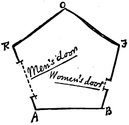

Flatland.
PART I.
THIS WORLD.
§ I. — Of the Nature of Flatland.
I call our world Flatland, not because we call it so, but to make its nature clearer to you, my happy readers, who are privileged to live in Space.
Imagine a vast sheet of paper on which straight Lines, Triangles, Squares, Pentagons, Hexagons, and other figures, instead of remaining fixed in their places, move freely about, on or in the surface, but without the power of rising above or sinking below it, very much like shadows — only hard and with luminous edges — and you will then have a pretty correct notion of my country and countrymen. Alas, a few years ago, I should have said "my universe;" but now my mind has been opened to higher views of things.
In such a country, you will perceive at once that it is impossible that there should be anything of what you call a "solid" kind; but I dare say you will suppose that we could at least distinguish by sight the Triangles, Squares, and other figures, moving about as I have described them. On the contrary, we could see nothing of the kind, not at least so as to distinguish one figure from another. Nothing was visible, nor could be visible, to us, except Straight Lines; and the necessity of this I will speedily demonstrate.
Place a penny on the middle of one of your tables in Space; and leaning over it, look down upon it. It will appear a circle.
But now, drawing back to the edge of the table, gradually lower your eye (thus bringing yourself more and more into the condition of the inhabitants of Flatland), and you will find the penny becoming more and more oval to your view; and at last when you have placed your eye exactly on the edge of the table (so that you are, as it were, actually a Flatlander) the penny will then have ceased to appear oval at all, and will have become, so far as you can see, a straight line.
The same thing would happen if you were to treat in the same way a Triangle, or Square, or any other figure cut out of pasteboard. As soon as you look at it with your eye on the edge on the table, you will find that it ceases to appear to you a figure, and that it becomes in appearance a straight line. Take for example an equilateral Triangle — who represents with us a Tradesman of the respectable class. Fig. 1 represents the Tradesman as you would see him while you were bending over him from above; figs. 2 and 3 represent the Tradesman, as you would see him if your eye were close to the level, or all but on the level of the table; and if your eye were quite on the level of the table (and that is how we see him in Flatland) you would see nothing but a straight line.

When I was in Spaceland I heard that your sailors have very similar experiences while they traverse your seas and discern some distant island or coast lying on the horizon. The far-off land may have bays, forelands, angles in and out to any number and extent; yet at a distance you see none of these (unless indeed your sun shines bright upon them revealing the projections and retirements by means of light and shade), nothing but a grey unbroken line upon the water.
Well, that is just what we see when one of our triangular or other acquaintances comes toward us in Flatland. As there is neither sun with us, nor any light of such a kind as to make shadows, we have none of the helps to the sight that you have in Spaceland. If our friend comes closer to us we see his line becomes larger; if he leaves us it becomes smaller: but still he looks like a straight line; be he a Triangle, Square, Pentagon, Hexagon, Circle, what you will — a straight Line he looks and nothing else. You may perhaps ask how under these disadvantageous circumstances we are able to distinguish our friends from one another: but the answer to this very natural question will be more fitly and easily given when I come to describe the inhabitants of Flatland. For the present let me defer this subject, and say a word or two about the climate and houses in our country.
§ 2. — Of the Climate and Houses in Flatland
As with you, so also with us, there are four points of the compass North, South, East, and West.
There being no sun nor other heavenly bodies, it is impossible for us to determine the North in the usual way; but we have a method of our own. By a Law of Nature with us, there is a constant attraction to the South; and, although in temperate climates this is very slight — so that even a Woman in reasonable health can journey several furlongs northward without much difficulty — yet the hampering effect of the southward attraction is quite sufficient to serve as a compass in most parts of our earth. Moreover, the rain (which falls at stated intervals) coming always from the North, is an additional assistance; and in the towns we have the guidance of the houses, which of course have their side-walls running for The most part North and South, so that the roofs may keep off the rain from the North. In the country, where there are no houses, the trunks of the trees serve as some sort of guide. Altogether, we have not so much difficulty as might be expected in determining our bearings.
Yet in our more temperate regions, in which the southward attraction is hardly felt, walking sometimes in a perfectly desolate plain where there have been no houses nor trees to guide me, I have been occasionally compelled to remain stationary for hours together, waiting till the rain came before continuing my journey. On the weak and aged, and especially on delicate Females, the force of attraction tells much more heavily than on the robust of the Male Sex, so that it is a point of breeding, if you meet a Lady in the street, always to give her the North side of the way — by no means an easy thing to do always at short notice when you are in rude health and in a climate where it is difficult to tell your North from your South.
Windows there are none in our houses: for the light comes to us alike in our homes and out of them, by day and by night, equally at all times and in all places, whence we know not. It was in old days, with our learned men, an interesting and oft-investigated question, "What is the origin of light?" and the solution of it has been repeatedly attempted, with no other result than to crowd our lunatic asylums with the would-be solvers. Hence, after fruitless attempts to suppress such investigations indirectly by making them liable to a heavy tax, the Legislature, in comparatively recent times, absolutely prohibited them. I — alas; I alone in Flatland — know now only too well the true solution of this mysterious problem; but my knowledge cannot be made intelligible to a single one of my countrymen; and I am mocked at — I, the sole possessor of the truths of Space and of the theory of the introduction of Light from the world of three Dimensions — as if I were the maddest of the mad! But a truce to these painful digressions: let me return to our houses.
The most common form for the construction of a house is five-sided or pentagonal, as in the annexed figure. The two Northern sides RO, OF, constitute the roof, and for the most part have no doors; on the East is a small door for the Women; on the West a much larger one for the Men; the South side or floor is usually doorless.
Square and triangular houses are not allowed, and for this reason. The angles of a Square (and still more those of an equilateral Triangle,) being much more pointed than those of a Pentagon, and the lines of inanimate objects (such as houses) being dimmer than the lines of Men and Women, it follows that there is no little danger lest the points of a square or triangular house residence might do serious injury to an inconsiderate or perhaps absent-minded traveller suddenly therefore, running against them: and as early as the eleventh century of our era, triangular houses were universally forbidden by Law, the only exceptions being fortifications, powder-magazines, barracks, and other state buildings, which it is not desirable that the general public should approach without circumspection.
At this period, square houses were still everywhere permitted, though discouraged by a special tax. But, about three centuries afterwards, the Law decided that in all towns containing a population above ten thousand, the angle of a Pentagon was the smallest house-angle that could be allowed consistently with the public safety. The good sense of the community has seconded the efforts of the Legislature; and now, even in the country, the pentagonal construction has superseded every other. It is only now and then in some very remote and backward agricultural district that an antiquarian may still discover a square house.